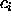
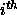
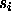
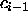
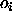
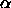
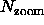

The <xray> programme is used to volume render cubes.
You can think of the way a data cube is rendered as lines of sight going from every pixel of the display through the data cube and the voxels (visualisation speak for volume element of the data cube) on a line of sight contribute in some way to the colour and intensity of the display pixel. To decide how every voxel contributes, a number of algorithms (called shaders) are available.
Below are two lists with the shaders available. The first list contains simple shaders. The Voxel sum and the Maximum voxel shaders are useful for exploring the data cube, because they are relatively fast and give a reasonable display of the data.
The second kind of shaders uses an equation of radiative transfer to compute the images. These are called hot gas shaders.
The contribution of a voxel to the pixel on the display is calculated using a simple equation of radiative transfer, where a voxel is partly absorbed by voxels that are in front of it:
where  is the intensity along a line of sight after adding the  voxel in front,  the intensity of the voxel added,  the intensity along the line of sight that is behind the voxel, and  the opacity of the voxel i. This calculation is done `back-to-front', so voxels in the back of the cube are partly obscured by voxels in the front part of the cube.
If the opacity for a voxel is zero, that voxel becomes completely transparent but also invisible. This closely resembles the behaviour of a self-radiating cloud of hot gas, where gas particles both emit and absorb radiation. Regions with high gas particle density will have a higher surface brightness, but will also have a higher cross-sectional area of absorption.
The resulting rendered image appears like a cloud of glowing gas, which shows both internal and external structure.
You can use this to make features disappear (eg. noise). The disadvantage is that in order to make the data that you want to see transparent, you also make it barely visible. Consequently, the opacity of data you want to see has to be not too low and as a result one will tend to see only the surface of the emission regions.
There are a few versions of this implemented, differing in whether they do the rendering monochromatically or in colour.
The contribution of a voxel to the colour of the pixel on the display is calculated using the radiative transfer, but for each colour (red, green or blue) separately. This means that if a blue voxel is behind a red one, the blue is still visible. This makes the data appear more transparent. It also means that this shader produces images that are 24-bit deep (one byte for every colour) and to change colours on the display, you will have to manipulate the substances. It also means that to play movies made with this shader, you may want to convert the images to 8 bit using the conv24to8 programme.
A practical disadvantage of this shader is that it is difficult to set the colours and the opacities of the substances exactly as you want, there are many many parameters to set. It takes quite some time to produce reasonable images with this shader. You can save time by only defining a small number of substances (say the default eight), but then the representation of the data is somewhat schematic. If you define the maximum number of substances, you can set up a substance table with a smoother colour transition, but of course it takes more time for you to set up the table.
A strong advantage of this shader is it can be useful to display both absorption and emission in a datacube.
where o is again the opacity, v the value of the voxel. By setting  you can control which parts of the data are visible/opaque. A small value of makes low-level emission already quite opaque, while a large value will show only the brighter voxels. Also, the computation is done on the floating point data, not on colours (hence the mono). This increases the dynamic range of the image very much. Images produced by this shaders are floating point.
An option offered with this shader that the intensity can be transformed before rendering, according to a similar function as above:
where s is the value used for the voxel in the radiative transfer and v is the value of the voxel.
To start the rendering software on any workstation type
xray
<xray> supports several command line options which are all documented in the manual page. The options of general interest are:
After starting up, many windows will appear:
Another window that you will see (after the first time you render the cube) is the image display. This window is similar to the display window in many of the other tools (see section 2.15).
<xray> supports many data formats like any other Karma programme. For reasons of memory use and speed, the preferred data format used by <xray> is that the data is stored as bytes, with values ranging from -127 to 127 (the value -128 is used for blank or missing data). The values in your data cube will have to be scaled into this range.
If you load a non-byte data cube, <xray> will display a window showing the histogram of the data values in the cube. If you want to use the full range of values in the cube (good for a first look at the data), click (left) on the Full Range button. If you want to select a sub-range of the data, click (left) in the histogram window to define the lower bound and click (right) to define the upper bound. You then click (left) on Apply to tell <xray> to compress the cube to a byte cube. You will then be able to click (left) on the Save button, to save the compressed data cube. The default filename is ``scaled'', but you can change this prior to saving. Once you have saved a compressed cube, the next time you load it in <xray> it will load much faster.
The proper values for the scaling range of course depend on the data in the cube and on what you want to see in the data, but here are some hints. Normally, the histogram has a large peak around zero (The Noise). Unless you want to have a look at the noise in your data cube (eg. because you want to look at subtle calibration errors or errors in the continuum subtraction, errors that show up quite well with the rendering software), it may be a good idea to take the minimum such that most of this peak is excluded. Depending on which voxel algorithm you use in the rendering (see later), if you include data at the noise level, your rendered data cube will have a lot of noise `in front' of your object of interest and it may just be in the way. There are however also other ways (see below) to hide the noise.
Consider that with the rendering software you may see faint structures in your data that you were not aware of. So you may not want the minimum to be too high either otherwise you may miss interesting features in your data. Of course, when there is absorption in the data, the noise will have to be included.
Also consider that the because the data is scaled into [-127, 127], the dynamic range is limited, so in some cases it may be a good idea to choose the maximum not too high. You will be able to see more detail in the fainter emission.
A screen snapshot is available here.
The following controls are available:
Because of a problem with the vendors graphics library it is best to use the stereo option when rendering to 24bit images (i.e. when using the ``Hot Gas Substances'' or ``Hot Gas Continuous'' shaders)
This menu allows you to switch from the default cursor to an experimental 2-dimensional ``active'' cursor. The default (or ``dumb'') cursor will allow you to read image values and positions in the display window in the conventional way. The ``active'' cursor allows you to point at a feature (say a blob) on your volume rendered cube and obtain the 3-dimensional position of that feature. The horizontal and vertical position information is accurate, however the depth position is computed using a heuristic and is less accurate. In another window you will see a plot of the cube values versus the position along the line of sight, drawn in white. A yellow vertical line shows the depth of the feature you are pointing at (really the depth the algorithm thinks the feature is at). Both the 3-dimensional position information and the plot window are dynamically updated as you move the cursor in the image display window.
The following rendering modes are defined:
With the sliders Roll, Pitch and Yaw you can rotate the data cube by hand. The coordinate axes are defined such that the X-axis is horizontal, the Y-axis vertical and the Z-axis pointing into the display. The Roll rotation is around the X-axis, Pitch around the Y-axis and Yaw around the Z-axis. Since rotations do not commute, it is important to know that the order of the rotations is Roll first, then Pitch and then Yaw.
To see the cube in the orientation you specify, click (left) on Compute. Reset Orientation resets the orientation to face-on.
The main problem with volume rendering data cubes is that one does not really get a three dimensional perception of the rendered cube. One can display a scene from daily life in a very crude way and still perceive it as a 3D scene. But this apparently is not true for data cubes. The brain does not recognize the object in the image and therefore it does not make a three dimensional perception. One way to get a three dimensional perception of the data is to make a movie in which the data cube is rotated while it is rendered.
For making such a movie, click (left) on Make Movie, and the movie control window will pop up. This window allows you to make a series of images where the data cube is rotated in steps. Use the sliders to set the increment in Roll, Pitch and Yaw, and the number of images you want. Start Movie then starts computing this sequence. To save a movie, type in a filename and click Save Movie. Once the movie has been generated an animation control window will appear, allowing you to view the movie.
One consideration is the size of the movie. If this is too large (i.e. larger than about 40 Mbyte on phoenix), playing the movie will be slow. An estimate of the size of a movie is
where x, y and z are the size of the axes of the data cube in pixels and  the zoom factor. My experience is that rotating the cube in steps of 10 degrees (so the movie is 36 frames) is in general sufficient to get a smooth movie.
It may not be a good idea to make a movie of images with a large Image Expand Factor, depending on the sizes of the axes of the cube. You will find that when you play such a movie, it will be slow because it has to swap images in and out. You can always zoom afterwards when you play the movie by resizing the window, although the result may not be as good.
Often, there will be problems with the data (too noisy, confusing or bright continuum sources) which make it difficult to see your data. To help, there are a few filtering alogorithms implemented which should help. Click on Filter in the main control window and a filtering control panel will pop up.
The following filtering algorithms are available:
One problem with volume rendering is that in order to see faint structures in the data cube, one has to set the opacities, intensity transformation and clips such that also the noise becomes bright. As a consequence, the emission is visible only through a thick fog of noise and this noise hides a lot of information.
One solution is to apply adaptive filtering to the data cube: the data is smoothed where the emission is faint and extended (or absent), while the data is left intact if it is stronger or more pointlike. There are several techniques to do this. At the moment two algorithms are implemented, but we are working on other filters.
The filters are based on work of J.-L. Starck, F. Murtagh and A. Bijaoui with a few extentions of our own. They consists of making a wavelet transform of each channel in the cube. This allows to consider the data locally at different resolutions and modify it such that the signal-to-noise is improved. For more information, have a look at Adaptive Filtering and Masking of HI Data Cubes, Tom Oosterloo, ESF workshop on Vision Modeling and Information Coding', Nice, 4-6 October 1995 Note that the wavelet transforms can be 3D and 2D (channel by channel).
The adaptive filtering algorithms available are:
An important element of this filter is that it does a median filtering on the logical mask. This makes isolated noise peaks disappear and makes the data look more 'consistent'.
The difference between the fast and slow version of this filter is that in the fast version 2 iterations are done, compared to 6 iterations in the slow version. The fast filter still leaves some noise blobs in the data, but fewer than the simple filter. The slow filter gets rid of almost all of them
There are two parameters to set for this filtering:
Specifying Levels to 0 the original unfiltered data cube is rendered, but with noise clipping applied
Often when you observe a spectral-line source you may have a confusing continuum source in the field. Your data reduction package should have a programme to subtract the continuum (e.g. ``uvlin'' in Miriad). The problem with some of these programmes is that in order to compute a fit to the spectrum of the continuum source, you first have to tell the programme which channels contain the spectral-line emission so that it can ignore those channels when computing the fit. The problem is how to find out which channels contain the line emission?
An effective technique is to invert your UV data into a cube before subtracting the continuum and then using <xray> to render it. Of course, if the continuum source is brighter than your spectral-line source (it usually is), the spectral-line source will be washed out. This is where you can use the subtract continuum filter. This will subtract the average flux in a spectral profile, for every point on the sky image. This is a good continuum-subtraction algorithm, to first order: it should filter out more than 90% of the continuum source.
Once you have your first order continuum-subtracted cube, you can use <xray> to find the spectral-line emission. In particular, you should find the 3D slicing window very handy, since it will give you the 3D co-ordinates of a point. Be warned that Karma programmes count from 0, whereas most astronomical reduction packages count from 1. If you take a channel index from Karma and put it into Miriad, remember to add the value 1.
Now that you have identified the spectral-line emission, you can run a programme like ``uvlin'' to do a better job of subtracting the continuum.
To apply the filtering. click on Do Filter. The cube is rendered automatically.
To get back the original data without any filtering, click on Undo Filter.
You may also Save the filtered cube for later use.
A screen snapshot is available here.
This controls the settings for the Hot Gas Substances. You should see a window with a histogram of the data values in the cube (actually the logarithm of the distribution), and in the bottom part you will see space for the colours of the substances. Each colour has a horizontal line on it. This is an indicator for the opacity of the substance.
To change the colour of a substances you have to click (left) on the space on the bottom of the window that is reserved for the substance. This selects the substance. To change the colour, move the mouse in the upper part of the window and drag (middle, not left!!) the mouse around until you have the colour you want. The saturation of the colour can be changed by moving the mouse around while you drag with the right button. To change the opacity, put the mouse on the substance and drag with the middle mouse button vertically.
To change the value ranges for the substances, drag (left) the mouse in the upper part of the window. In the upper part, there are a few symbols that help to orient yourself. The + is the setting for the value ranges, the O the setting for the substance you have selected, and the horizontal line on the left of the window is the saturation of that substance. With this window, one is only able to change the value ranges in a way similar to a normal colour table control.
To use the settings you have made, click (left) on Apply and a new image will be calculated.
The button Save brings up a window to save substances.
To load a substance table click on Load and select your file.
A screen snapshot is available here.
The control window for this allows you to set the opacity law of the Hot Gas Mono shader, as well as the exponent for the intensity transformation. One can also set the range of voxel values that are set to blank.
The following controls are available:
In the display canvas under the controls you will see a log-histogram of your data (in white) as well as a red curve showing the transfer function between data value and intensity (see equation 5.3) and a yellow curve showing the transfer function between data value and intensity (see equation 5.2. The opacity curve also reflects the blanked range of values.
This shader is a cross between Hot Gas Substances and Hot Gas Mono. It has a similar control as the Hot Gas Mono shader in <xray>. Also here the exponent of the opacity law can be set, as well as the values range for valid data. The difference is that one can set the connection between voxel value and colour using a colourtable-like interface.
This shader is an extension of the Hot Gas Continuous shader. It allows you to divide the data range into three regions, with independant opacity and colour transfer functions for each region. This shader is a little esoteric, and is designed for rendering data with two or three distinct populations of data values. This kind of data does not occur in radio astronomy. You may generate this data by combining two datacubes together. This shader would allow you to render one dataset in one colour and another dataset in another colour.